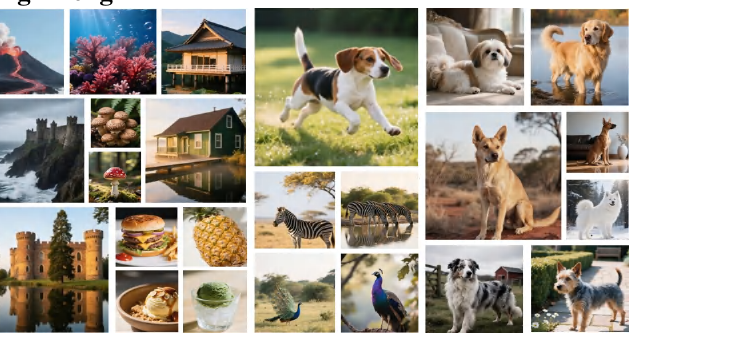
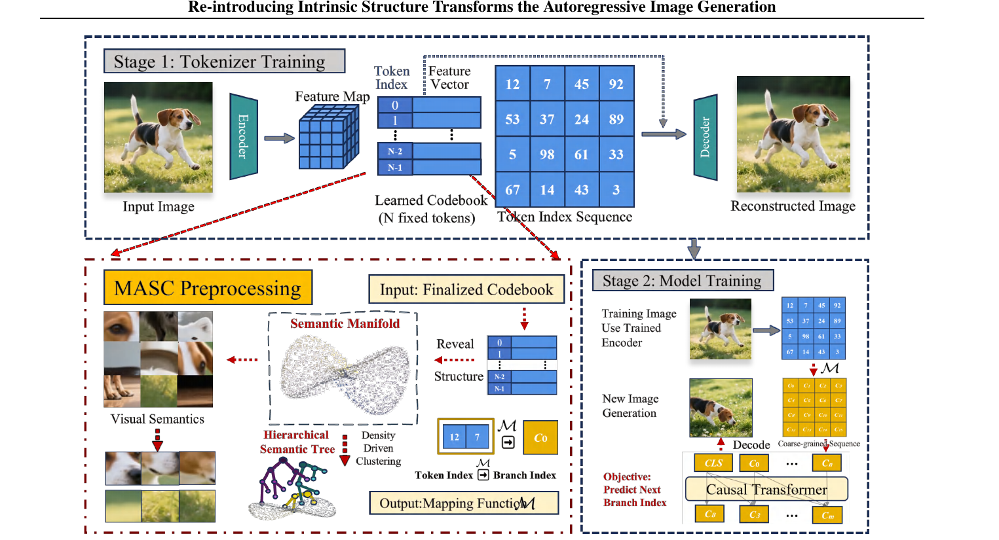
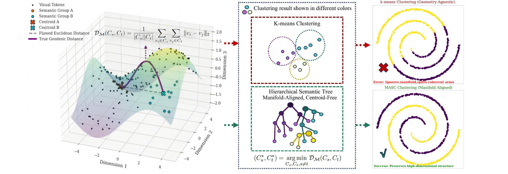
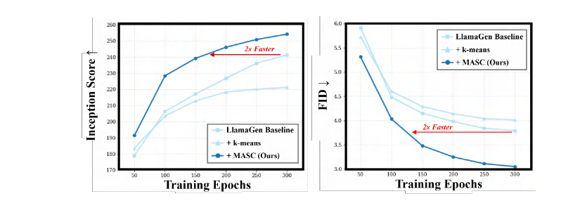
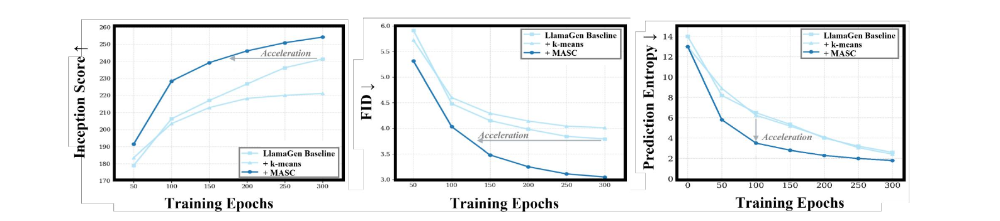
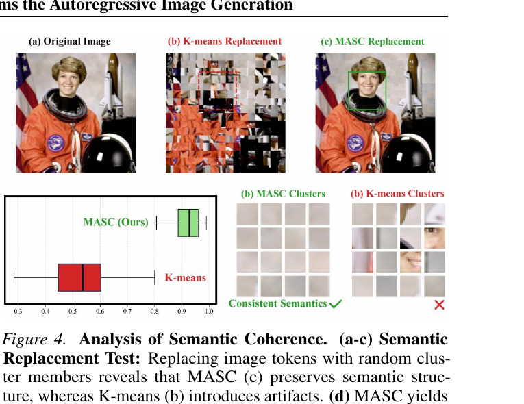
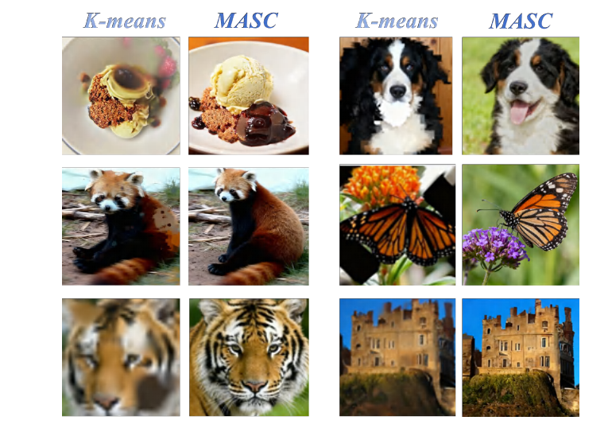
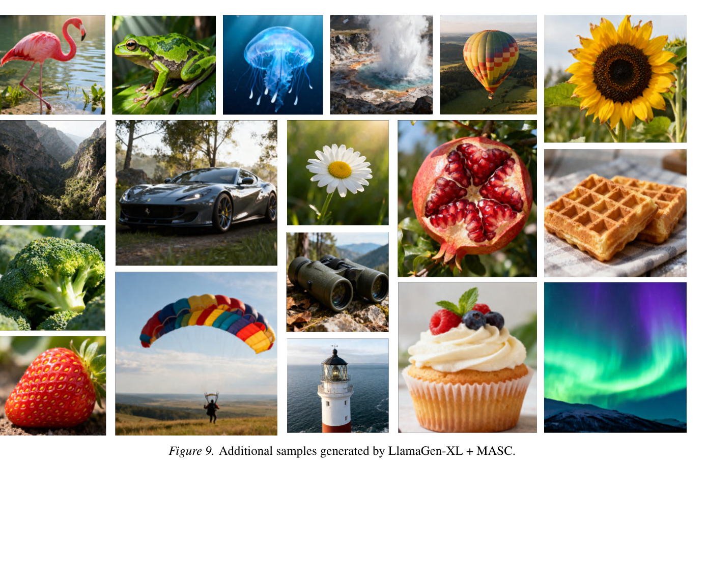

A principled, plug-and-play hierarchical prior over the visual codebook — turning a flat N-way token prediction into a structured k-way one.

Autoregressive (AR) models have shown great promise in image generation, yet they face a fundamental inefficiency stemming from their core component: a vast, unstructured vocabulary of visual tokens. By treating tokens as a flat set, standard models overlook the manifold structure where geometric proximity reflects semantic similarity. This oversight unnecessarily complicates the prediction task, hindering training efficiency and limiting generation quality.
To resolve this, we propose Manifold-Aligned Semantic Clustering (MASC), a principled framework that constructs a hierarchical semantic tree directly from the codebook's intrinsic geometry. Using a geometry-aware distance metric and a density-driven agglomerative construction, MASC faithfully models the token-embedding manifold. By transforming the flat, high-dimensional prediction into a structured hierarchical task, MASC introduces a powerful inductive bias that simplifies learning. As a plug-and-play module, MASC accelerates training by up to 71% and significantly boosts generation quality, improving LlamaGen-XL's FID from 2.87 to 2.49. Crucially, MASC further serves as a convergence enabler for complex architectures — establishing that structuring the prediction space is as vital as architectural innovation.
MASC is a one-time, offline preprocessing step. It reads a trained tokenizer's codebook, builds a density-driven hierarchical semantic tree, and emits a mapping that the AR model trains against — what the model predicts changes, how it predicts does not.


MASC changes a training pipeline in exactly three places: build the coarse vocabulary once, relabel the targets, and decode a predicted cluster back to a token at sampling time.
from masc import build_masc_tree, relabel_targets, random_sample_decode # (1) OFFLINE, ONCE — build the coarse vocabulary from the codebook (Algorithm 1) tree = build_masc_tree(codebook_embeddings, k=8192) # (2) TRAIN — predict the next coarse cluster instead of the next fine token (Eq. 5) coarse_targets = relabel_targets(fine_token_ids, tree.mapping) # (3) SAMPLE — decode a predicted cluster back to a token (default strategy) fine_tokens = random_sample_decode(coarse_cluster_indices, mapping)
On ImageNet 256×256, MASC consistently improves efficiency and final quality across all model scales, and decisively outperforms a naïve k-means prior (vocabulary k = 8,192).
| Model | Method | Params | Accel.↑ | FID↓ | IS↑ | Prec. / Rec.↑ |
|---|---|---|---|---|---|---|
| LlamaGen-B (111M) | Baseline | 111M | – | 5.56 | 185.1 | 0.85 / 0.45 |
| + k-means | 94M | −5% | 5.72 | 186.6 | 0.83 / 0.44 | |
| + MASC (Ours) | 94M | +42% | 4.81 | 206.4 | 0.86 / 0.48 | |
| LlamaGen-L (343M) | Baseline | 343M | – | 3.38 | 246.3 | 0.83 / 0.51 |
| + k-means | 311M | −10% | 3.81 | 221.2 | 0.77 / 0.55 | |
| + MASC (Ours) | 311M | +55% | 2.92 | 259.2 | 0.85 / 0.57 | |
| LlamaGen-XL (775M) | Baseline | 775M | – | 2.87 | 267.6 | 0.82 / 0.55 |
| + k-means | 719M | −8% | 3.09 | 244.3 | 0.76 / 0.56 | |
| + MASC (Ours) | 719M | +57% | 2.58 | 272.1 | 0.83 / 0.58 |
Table 1. Comprehensive performance analysis on ImageNet 256×256. MASC reduces task complexity, accelerates training, and yields superior generation quality at every scale.


MASC is robust to k: it reaches its best FID of 2.49 at k=4,096 and its best acceleration of +71% at k=2,048 (LlamaGen-XL).
| Method | Vocab (k) | FID↓ | IS↑ | Accel.↑ |
|---|---|---|---|---|
| Baseline | 16,384 | 2.87 | 267.6 | – |
| MASC | 8,192 | 2.58 | 272.1 | +57% |
| MASC | 4,096 | 2.49 | 269.8 | +63% |
| MASC | 2,048 | 2.65 | 264.4 | +71% |
Table 2. Ablation on vocabulary size k with LlamaGen-XL.
MASC is not tied to LlamaGen. As a drop-in module it improves FID, IS and training speed across diverse AR paradigms — and rescues advanced architectures that otherwise fail to converge.
| Framework | Method | Wall-clock (h) | Accel.↑ | FID↓ | IS↑ |
|---|---|---|---|---|---|
| VAR-d24 | Baseline | 520 | – | 2.09 | 312.9 |
| + MASC (2k) | 374 | +28% | 1.98 | 314.4 | |
| RandAR-XL | Baseline | 480 | – | 2.25 | 317.8 |
| + MASC (8k) | 326 | +32% | 2.02 | 320.5 | |
| CTF-LlamaGen-L | Baseline | 360 | – | 2.97 | 291.5 |
| + MASC (8k) | 255 | +29% | 2.51 | 296.9 | |
| IAR-XL | Baseline | 467 | – | 2.52 | 248.1 |
| + MASC (8k) | 340 | +32% | 2.35 | 284.3 | |
| GigaTok-L | Baseline | 420 | – | 3.39 | 263.7 |
| + MASC (8k) | 340 | +19% | 3.35 | 263.5 |
Table 3. MASC as a plug-and-play module across SOTA AR frameworks on ImageNet (selected rows). It consistently improves quality while substantially reducing wall-clock time.
MASC clusters group semantically interchangeable tokens. Replacing a token with a random member of its own cluster preserves global structure and object identity — geometry-agnostic k-means does not.



The reference implementation of the MASC construction, relabelling, decoding and diagnostics is open and self-verifiable. The AR backbones it enhances are obtained from their official repositories.
python scripts/build_masc_tree.py --codebook codebook.npy --k 8192 runs Algorithm 1 and writes
the token→cluster mapping. Try --demo for a no-download verification.
Relabel targets to coarse clusters and train any AR backbone with the provided objective and the
Table 8 hyperparameters in configs/.
Decode predicted clusters back to tokens with the parameter-free random-sampling decoder, then render with the tokenizer decoder.
@inproceedings{he2026masc,
title = {A Flat Vocabulary or a Rich Hierarchy? Re-introducing Intrinsic
Structure Transforms the Autoregressive Image Generation},
author = {He, Lixuan and Zheng, Shikang},
booktitle = {Proceedings of the 43rd International Conference on Machine Learning (ICML)},
year = {2026}
}